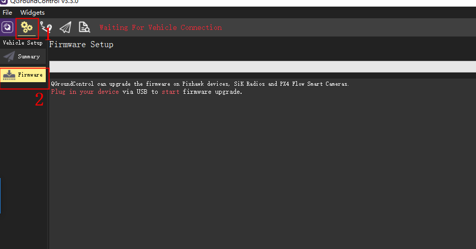
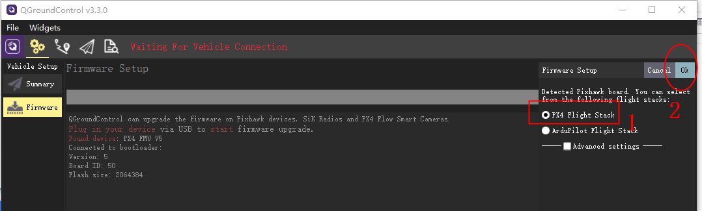
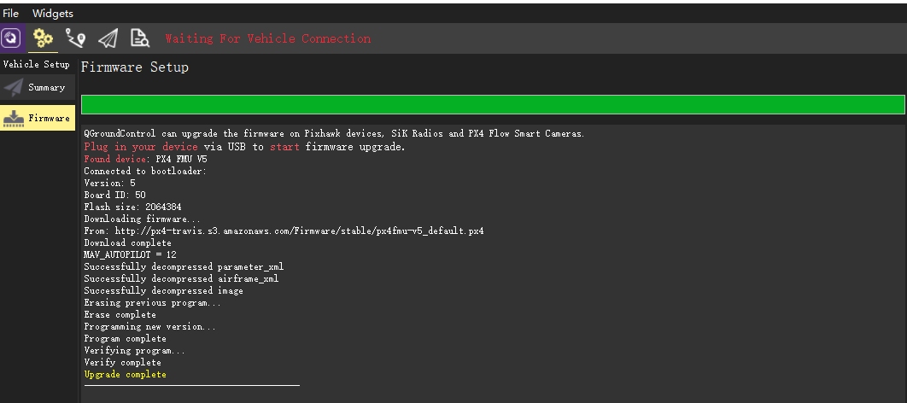
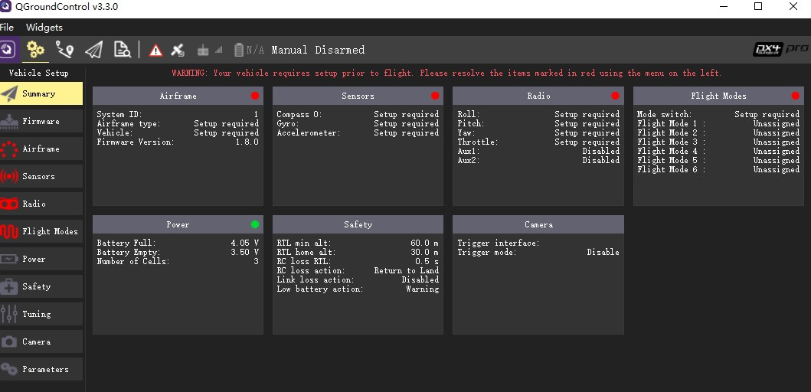
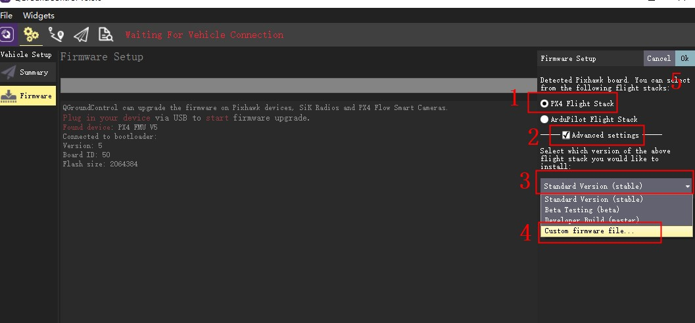

加载PX4原生固件
V5 AutoPilot支持PX4原生固件及ArduPilot,下面主要讲解如何加载这两种固件
PX4原生固件
在V5 AutoPilot作为强大的飞行控制系统，当然少不了对PX4原生固件的兼容。在产品测试阶段，CUAV与DEV团队就达成了深入的合作意向，将就PX4原生固件与V5 AutoPilot的软硬件适配展开深度的合作与交流.通过不断的测试和修改，V5 AutoPilot专用的PX4原生固件已经发布了稳定版本（第一版为1.80 stable).
在线烧录：
PX4原生固件在线烧录固件需要先安装QGoundcontrol地面站,打开地面站》点击设置图标》点击firmware 将V5 AutoPilot通过usb线连接到电脑，地面站右边将弹出下图窗口》选择需要PX4 Flight STACK》OK加载完成，如不进行操作，十几秒后将自动连接。
本地烧录：
请先下载PX4原生固件至本地
打开地面站》点击设置图标》点击firmware 将V5 AutoPilot通过usb线连接到电脑，地面站右边将弹出下图窗口》选择需要PX4 Flight STACK》勾选advanced settings>custon firmware file》找到下载的固件》ok
加载完成，如不进行操作，十几秒后将自动连接。